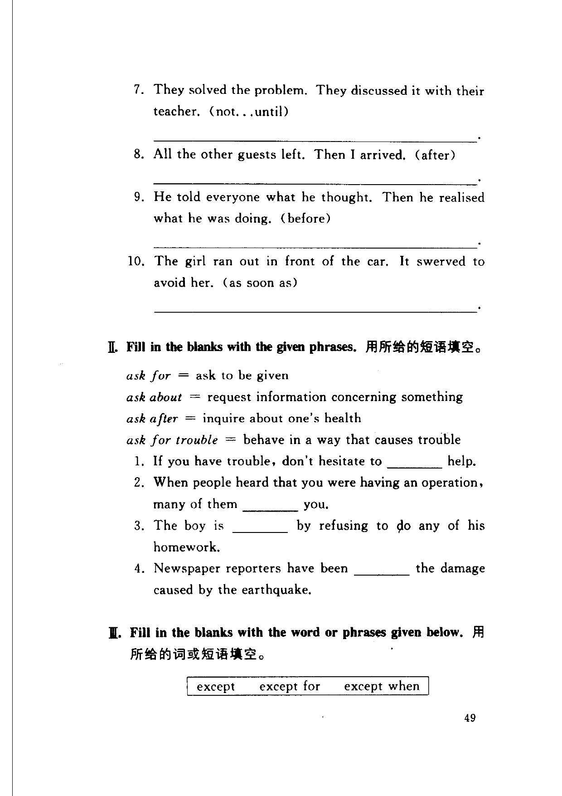
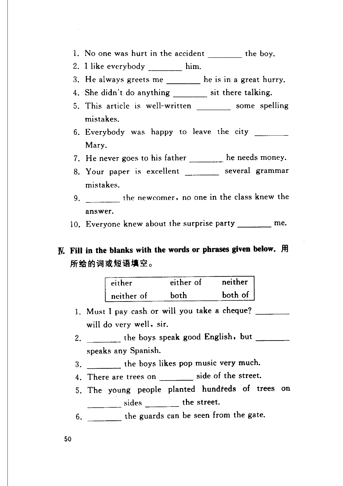
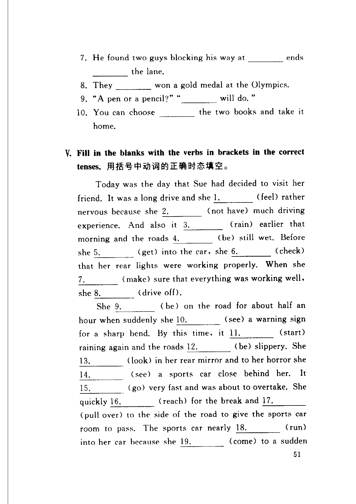

Grammar exercises · 语法练习
I. Join the pairs of sentences with the words or phrases in brackets.
用括号中的词或短语连接句子。
Example · 例句
He finished his homework. Then his parents got home. (before)
He had finished his homework before his parents got home.
-
I. Join sentences — It stopped raining. Then I woke up. (when)
-
I. Join sentences — I learnt the truth. I realised I had misunderstood him. (when)
-
I. Join sentences — I did the job. I spoke to the house owner first. (only after)
-
I. Join sentences — They were in high spirits. They won the game the day before. (because)
-
I. Join sentences — She wrote the letter. Then she posted it. (as soon as)
-
I. Join sentences — Her boyfriend left. The girl sat down and cried. (after)
-
I. Join sentences — They solved the problem. They discussed it with their teacher. (not...until)
-
I. Join sentences — All the other guests left. Then I arrived. (after)
-
I. Join sentences — He told everyone what he thought. Then he realised what he was doing. (before)
-
I. Join sentences — The girl ran out in front of the car. It swerved to avoid her. (as soon as)
II. Fill in the blanks with the given phrases.
用所给的短语填空。
ask for = ask to be given
ask about = request information concerning something
ask after = inquire about one's health
ask for trouble = behave in a way that causes trouble
-
II. Ask phrases — If you have trouble, don't hesitate to help.
-
II. Ask phrases — When people heard that you were having an operation, many of them you.
-
II. Ask phrases — The boy is by refusing to do any of his homework.
-
II. Ask phrases — Newspaper reporters have been the damage caused by the earthquake.
III. Fill in the blanks with the word or phrases given below.
用所给的词或短语填空。
except · except for · except when
-
III. except — No one was hurt in the accident the boy.
-
III. except — I like everybody him.
-
III. except — He always greets me he is in a great hurry.
-
III. except — She didn't do anything sit there talking.
-
III. except — This article is well-written some spelling mistakes.
-
III. except — Everybody was happy to leave the city Mary.
-
III. except — He never goes to his father he needs money.
-
III. except — Your paper is excellent several grammar mistakes.
-
III. except — the newcomer, no one in the class knew the answer.
-
III. except — Everyone knew about the surprise party me.
IV. Fill in the blanks with the words or phrases given below.
用所给的词或短语填空。
either · either of · neither · neither of · both · both of
-
IV. either/neither/both — Must I pay cash or will you take a cheque? will do very well, sir.
-
IV. either/neither/both — the boys speak good English, but speaks any Spanish.
-
IV. either/neither/both — the boys likes pop music very much.
-
IV. either/neither/both — There are trees on side of the street.
-
IV. either/neither/both — The young people planted hundreds of trees on sides the street.
-
IV. either/neither/both — the guards can be seen from the gate.
-
IV. either/neither/both — He found two guys blocking his way at ends the lane.
-
IV. either/neither/both — They won a gold medal at the Olympics.
-
IV. either/neither/both — "A pen or a pencil?" " will do."
-
IV. either/neither/both — You can choose the two books and take it home.
V. Fill in the blanks with the verbs in brackets in the correct tenses.
用括号中动词的正确时态填空。
-
V. Tenses — Today was the day that Sue had decided to visit her friend. It was a long drive and she 1. (feel) rather nervous because she 2. (not have) much driving experience. And also it 3. (rain) earlier that morning and the roads 4. (be) still wet. Before she 5. (get) into the car, she 6. (check) that her rear lights were working properly. When she 7. (make) sure that everything was working well, she 8. (drive off).
She 9. (be) on the road for about half an hour when suddenly she 10. (see) a warning sign for a sharp bend. By this time, it 11. (start) raining again and the roads 12. (be) slippery. She 13. (look) in her rear mirror and to her horror she 14. (see) a sports car close behind her. It 15. (go) very fast and was about to overtake. She quickly 16. (reach) for the break and 17. (pull over) to the side of the road to give the sports car room to pass. The sports car nearly 18. (run) into her car because she 19. (come) to a sudden stop. As soon as the two drivers 20. (recover) from the shock, they 21. (get out) to inspect the damage. Luckily there 22. (be) no serious injuries. Ten minutes later, a policeman 23. (arrive), the same policeman that Sue 24. (meet) in her last car accident. When he 25. (see) her, he 26. (say): "So it's you again, is it?" But before he 27. (can) continue, the driver of the sports car said: "If the young woman 28. (not stop) her car so quickly, officer, I might have been killed! She 29. (be) a very experienced driver!"
Original images · 原图对照
Expand a page to compare it with the transcription. Open the original in a new tab to zoom in.
展开原图核对文字，也可以在新标签页打开原图放大查看。

Book page 2 · Exercise I (items 7–10), Exercise II (items 1–4) and Exercise III (start)
Open original · 打开原图 ↗ Download original · 下载原图


Book page 3 · Exercise III (items 1–10) and Exercise IV (items 1–6)
Open original · 打开原图 ↗ Download original · 下载原图


Book page 4 · Exercise IV (items 7–10) and Exercise V (passage)
Open original · 打开原图 ↗ Download original · 下载原图



Your notes and answers
Use this space for longer responses or exercises that do not have an individual answer box.